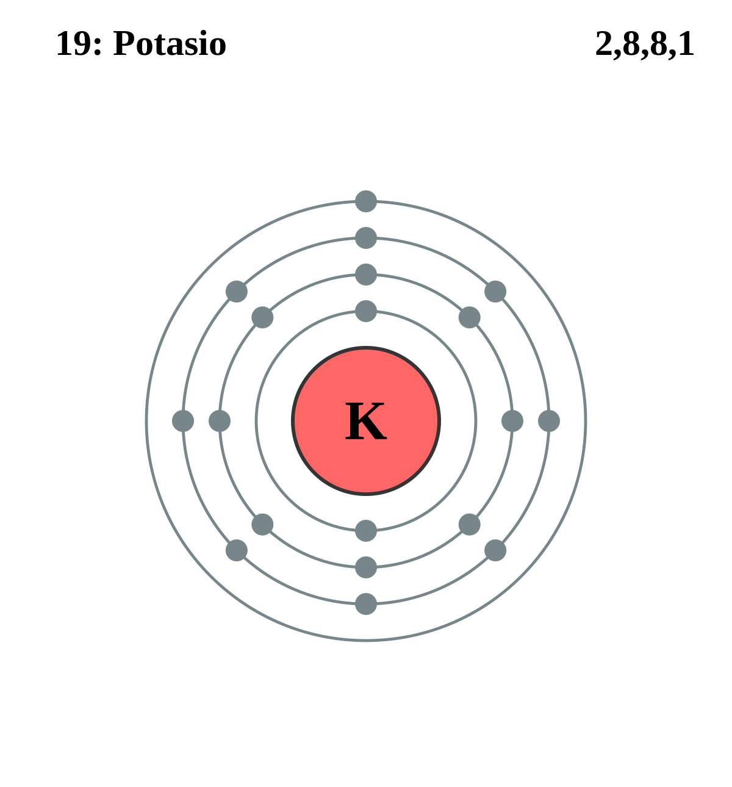

|
|
||
|
POTASIO El potasio se descubrió en 1807 y es el séptimo metal más abundante. El potasio no se encuentra en la naturaleza en estado libre y la mayoría de los minerales que lo contienen son insolubles, por lo que es difícil de obtener. Es el metal más reactivo y electropositivo, y el más ligero después del litio. El potasio es blando y de color plateado, se puede cortar con un cuchillo, se oxida rápidamente en contacto con el aire y debe almacenarse sumergido en un aceite mineral como el queroseno. Se descompone en el agua para producir hidrógeno y se enciende espontáneamente en contacto con el aire. El potasio tiene 17 isótopos, entre los que se encuentra una forma radioactiva. La mayor demanda de potasio es en fertilizantes debido a que es esencial para el crecimiento de las plantas. También son importantes muchas sales de potasio, como el hidróxido, el nitrato, el carbonato, el cloruro, el clorato, el bromuro, el yoduro, el cianuro, el sulfato, el cromato y el dicromato. |
 |
DATOS Número Atómico: 19 Peso Atómico: 39.10 Electronegatividad: 0.82 Configuración Electrónica: [Ar] 4s¹ Estados de Oxidación: +1 No. de Electrones de Valencia: 1 |